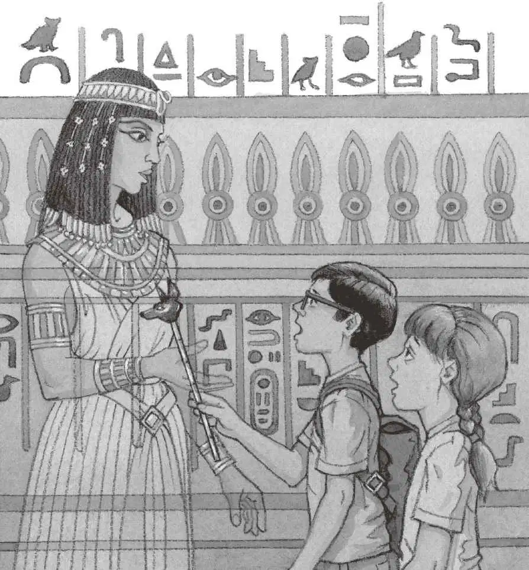

杰克把安妮按倒。
那个白色的身影飞快地从他们身边掠过，消失在了阴影里。
“是木乃伊，”安妮说，“他死而复生了！”
“别……别胡说，”杰克捡起埃及书结结巴巴地说，“这不可能。”
“这是什么？”安妮说着从地上捡起了一个东西，“看，是从木乃伊身上掉下来的。”
那是一根金杖，约三十厘米长。金杖顶端刻着一个狗头。
“看着像是一根权杖。”杰克说。
“权杖是什么？”安妮问。
“是国王和王后手里拿的东西，”杰克说，“表示他们有权统治别人。”
“木乃伊，快回来！”安妮大声喊道，“我们捡到了你的权杖。快回来！我们想帮你！”
“嘘！”杰克说，“你疯了吗？”
“可是木乃伊——”安妮说。
“没有什么木乃伊，”杰克说，“那是一个人，一个真人。”
“什么样的人会躲在金字塔里面呢？”安妮问。
“我不知道。”杰克说，“也许这本书能帮我们揭开谜底。”
他飞快地在书中找到了一幅图片，画面上的金字塔里有一个人。
杰克读道：
盗墓人经常偷窃木乃伊的陪葬财宝。
为了防止木乃伊被盗，
人们有时会修一些假的通道。
杰克把书合上说：“那个人不是木乃伊，是盗墓人。”
“什么？盗墓人？”安妮问。
“对，就是盗贼，专门偷墓里的东西。”杰克解释说。
“万一他等会儿回来了呢？”安妮说，“我们还是赶紧离开吧。”“好。”杰克说，“不过我得先把一些东西写下来。”他把埃及书放进背包里，然后掏出了笔记本和铅笔，写道：
“杰克——”安妮喊。
“马上就好。”杰克说着继续写道：
“杰克！快看！”安妮惊叫道。
杰克突然感到一阵凉风，他抬头一看，恐惧感顿时传遍了全身。
又有一个身影在慢慢朝他们移动过来。
这次不是盗墓人，而是一位女子，一位美丽的埃及女子。
女子乌黑的头发上戴着花，一袭白色的长裙上打着许多细小的皱褶，金色的首饰闪烁着光芒。
安妮把金权杖递给杰克，压低声音说：“给，杰克，把这个交给她。”

埃及女子在他们面前停住了脚步。
杰克把权杖递了过去，手不停地颤抖。
没想到，权杖直接穿透了女子的手。
杰克惊愕地倒抽了口冷气，心想：“她竟然是空气做的。”